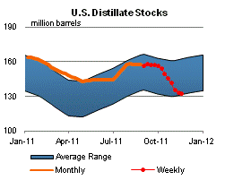

Released: November 23, 2011
Next Release: November 30, 2011
Ethanol Blend Wall: Are We There Yet?
Ethanol blending in the United States has recently grown to the point where nearly every gallon of gasoline contains 10-percent ethanol by volume (E10), the legal maximum for general use in conventional gasoline-powered vehicles under the gasohol waiver issued in 1979 by the U.S. Environmental Protection Agency (EPA). While EPA acted in late 2010 and early this year to approve the use of gasoline containing 15 percent ethanol by volume (E15) in all gasoline-powered light-duty vehicles sold since the 2001 model year, E15 still faces several regulatory and market hurdles. The term "blend wall" describes the situation in the ethanol market as it nears the saturation point (at the 10 percent content level) due to limited ability to distribute or use additional ethanol, except as E85, a fuel blend with 70 percent to 85 percent ethanol content presently used in very limited volumes that may be sold only for use in flex-fuel vehicles that have been specifically designed to accommodate its use.
In the short-term, corn ethanol production volumes beyond those needed to blend 10 percent into every gallon of gasoline will likely be exported until E15 and/or E85 blends are more widely available and accepted by consumers. Ascertaining whether the United States has hit the blend wall is important in determining the scope for growth in the ethanol market as well as the future for compliance with policies such as the Renewable Fuel Standard (RFS) which mandates a steady rise in the use of biofuels.
Over the last decade, the growth in ethanol production and consumption in the United States has been largely policy-driven, most notably through the RFS and the Volumetric Ethanol Excise Tax Credit (VEETC), also known as the "Blender's Tax Credit," which has a current value of 45 cents per gallon of ethanol blended with U.S. gasoline, or 4.5 cents per gallon of gasoline containing 10-percent ethanol (E10). As a result, U.S. ethanol production has grown rapidly, increasing from 106,000 barrels per day (bbl/d) in 2000 to as high as 925,000 bbl/d in November 2010.
Recognition of the looming blend wall motivated the March 2009 waiver filing by Growth Energy and 54 ethanol producers seeking approval for the use of ethanol blends above E10 in conventional gasoline vehicles. In October 2010, after conducting testing alongside the U.S. Department of Energy, the EPA approved (but did not require) the use of E15 in model year 2007 and newer light-duty motor vehicles. In January 2011, EPA approved (but did not require) the use of E15 in model year 2001 through 2006 light-duty vehicles.1 As of January 2011, the vehicles covered by the two E15 waivers were estimated to be more than half of the light-duty vehicles in use on U.S. roads.
Figure 1 highlights the trend toward the 10-percent level of ethanol use in the gasoline over the last two years. Motor gasoline product supplied has remained virtually flat over this period, while fuel ethanol consumption has increased steadily, driving up the average U.S. ratio. This estimation shows that the national share of ethanol in gasoline reached 10 percent in June 2011, and has been near that level since late 2010.
The rapid increase in U.S. ethanol exports in 2010 and 2011, combined with very low levels of ethanol imports, is additional evidence that the blend wall has been reached in most areas. Fuel ethanol exports rose averaged almost 800 thousand barrels per month in 2010, with a strong trend upward in the latter half of the year. This trend continued in the first months of 2011 as export volumes climbed from just under 1.5 million barrels of total ethanol exports for both January and February to more than 3 million barrels of exports in July. This trend, in conjunction with few imports, could be a sign that domestic markets for E10 are currently saturated, and until E15 and/or E85 is more available and widely adopted, additional ethanol volumes beyond the 10-percent share of gasoline are being sold to foreign markets.
While nationally we are seeing total ethanol use in all gasoline at about 10 percent, available data suggest that the blend wall has not been reached in every region. Some smaller regions appear to still not be saturated. The blend ratio in PADD 4 (the Rocky Mountains), for example, was still below 8 percent as of July 2011 (according to some EIA estimates). In addition, volumes of higher-level blends such as E85, while modest, would tend to push up the ratio, masking gasoline volumes that are not blended with ethanol. Furthermore, the data are inexact: published ethanol consumption includes uncertainties due to estimates for missing information and inherent data errors. These issues are addressed in more detail in a recent U.S. Energy Information Administration discussion paper, along with different methods used to estimate the blend ratio. Regardless, we appear to be near enough to the 10-percent ethanol blend wall to merit closer inspection of how the ethanol market will respond in the face of this challenge.
Retail gasoline price drops but is a record for Thanksgiving week
The U.S. average retail price of regular gasoline shed almost seven cents to reach $3.37 per gallon, the highest Thanksgiving week nominal price ever recorded. The average price is $0.49 per gallon higher than last year at this time. The Midwest had the largest decrease at ten and a half cents to put the price at $3.27 per gallon. The Gulf Coast price dropped about seven cents, while the East Coast and Rocky Mountain prices both fell over four cents to put prices at $3.38 per gallon and $3.40 per gallon, respectively. The West Coast average decreased a nickel but remained the most expensive region in the country at $3.71 per gallon.
The national average diesel price topped $4 per gallon for first time since the end of May, after gaining two cents to put the price at $4.01 per gallon. The diesel price is $0.84 per gallon higher than last year at this time. The Rocky Mountain region tallied the largest increase (over a nickel) to put prices at $4.14 per gallon. All other regions increased about two cents per gallon. The West Coast average was the highest in the country at $4.19 per gallon, while the Gulf Coast was the least expensive at $3.90 per gallon.
U.S. residential heating oil prices slip after five consecutive weeks of gains
Residential heating oil prices decreased during the period ending November 21, 2011. The average residential heating oil price fell by less than $0.01 per gallon last week to reach a price just below $3.94 per gallon, an increase of $0.83 per gallon from the same time last year. The wholesale heating oil price decreased by nearly $0.17 per gallon last week to $3.13 per gallon, $0.77 per gallon more than last year at this time.
The average residential propane price increased by 1 cent per gallon to almost $2.84 per gallon, which is $0.28 per gallon higher than last year. Prices increased in all regions and sub regions. The wholesale propane price decreased by $0.02 per gallon to $1.47 per gallon. This was an increase of $0.20 per gallon when compared with the November 22, 2010 price of $1.27 per gallon.
Propane stocks fall slightly
Last week, total U.S. inventories of propane decreased 0.2 million barrels, ending at 59.4 million barrels in total. The largest draw occurred in the Gulf Coast region, where stocks fell 0.4 million barrels and remain well below typical levels for this time of year. This was mostly offset by a build of 0.2 million barrels in the Midwest region. The East Coast and Rocky Mountain/West Coast regional inventories were both down slightly. Propylene non-fuel use inventories represented 7.0 percent of total propane inventories.
Text from the previous editions of This Week In Petroleum is accessible through a link at the top right-hand corner of this page.
 |
|||||||
| Retail Data | Changes From | Retail Data | Changes From | ||||
| 11/21/11 | Week | Year | 11/21/11 | Week | Year | ||
| Gasoline | 3.368 | Heating Oil | 3.935 | ||||
| Diesel Fuel | 4.010 | Propane | 2.838 | ||||
|
|||||||||||||||||||||||||||
| *Note: Crude Oil Price in Dollars per Barrel. | |||||||||||||||||||||||||||
|  | |||||||
| Stocks Data | Changes From | Stocks Data | Changes From | ||||
| 11/18/11 | Week | Year | 11/18/11 | Week | Year | ||
| Crude Oil | 330.8 | Distillate | 133.0 | ||||
| Gasoline | 209.6 | Propane | 59.385 | ||||